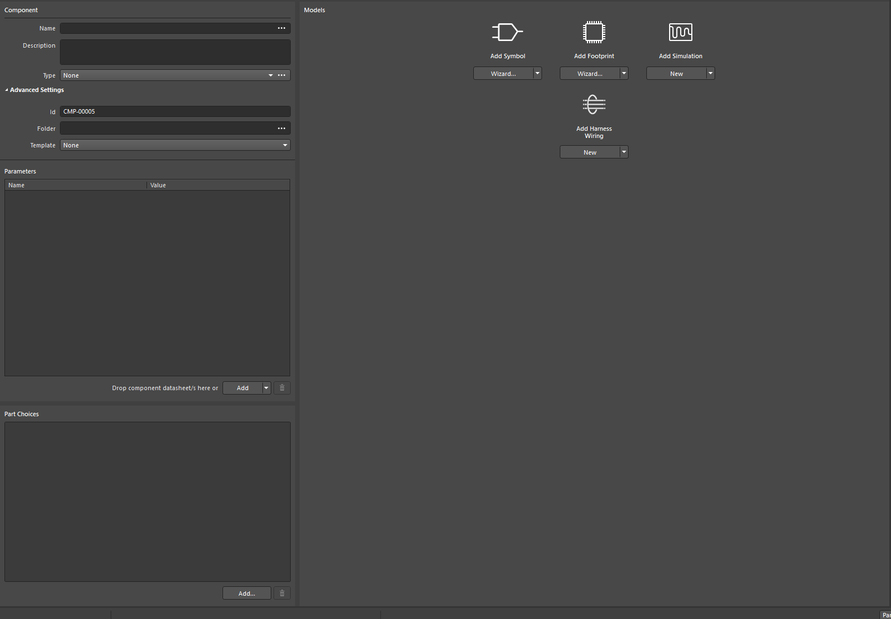
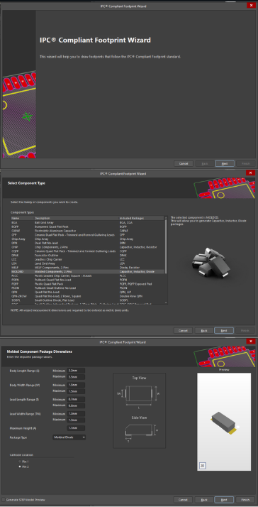
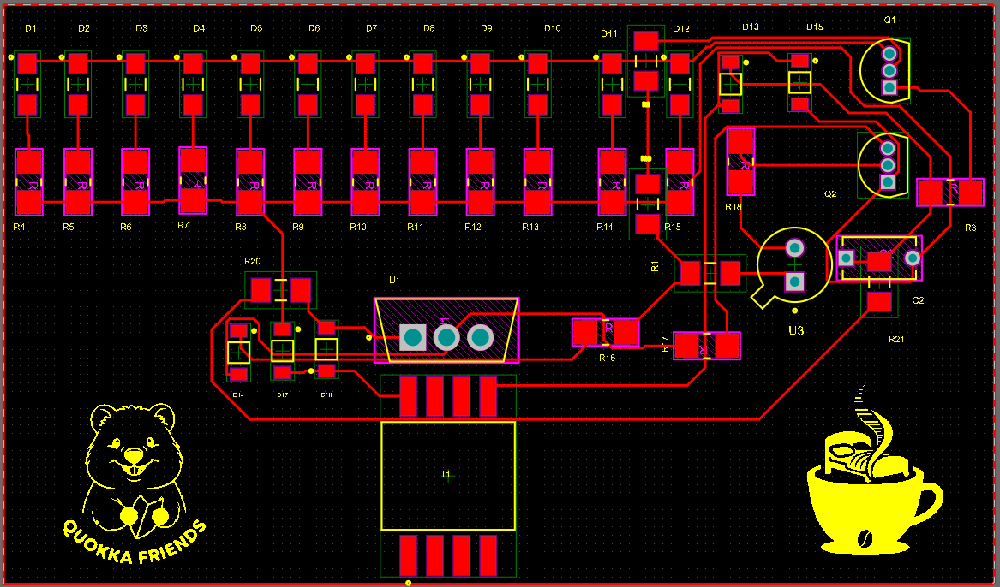
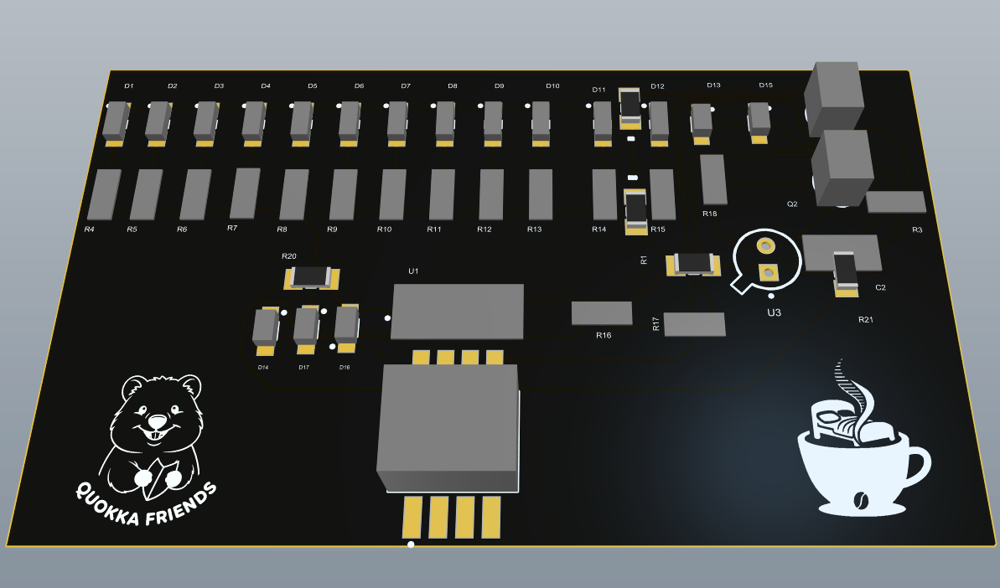
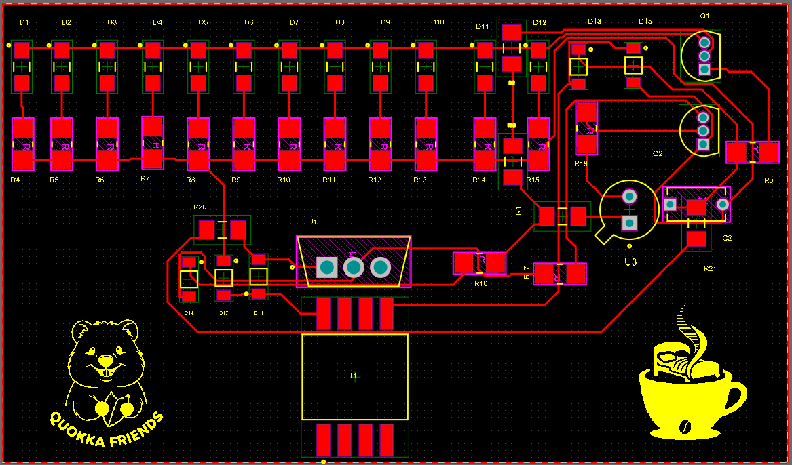
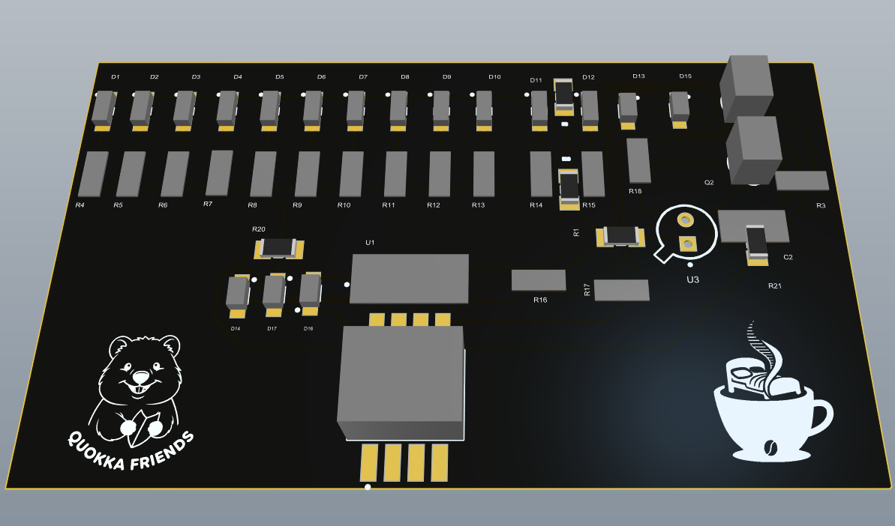
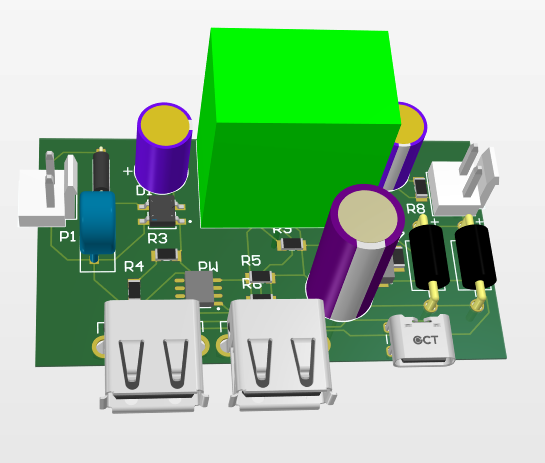
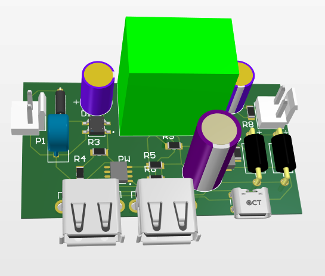

Práctica 5
Altium
En esta práctica aprendimos a utilizar el software Altium Designer, una herramienta profesional para el diseño de circuitos impresos (PCB). Aprendimos a crear esquemáticos electrónicos, colocar y conectar componentes, generar el diseño de las pistas y preparar los archivos necesarios para la fabricación. También comprendimos la importancia de una correcta organización del proyecto y la verificación del diseño para asegurar el funcionamiento adecuado del circuito.
Guía Técnica Altium Designer
¿Qué es Altium Designer?
Altium Designer es el estándar de la industria para el diseño de PCBs (Printed Circuit Boards). Unifica todas las facetas del proceso de diseño: esquemático, diseño de PCB, gestión de librerías y simulación, en un único entorno cohesivo. A diferencia de otros softwares, permite una visualización 3D en tiempo real y reglas de diseño (DRC) avanzadas para manufactura profesional.
Configuración Inicial y Licencias
Licenciamiento: Al iniciar Altium, es obligatorio iniciar sesión con AltiumLive. Verifica en la esquina superior derecha que tu licencia esté "Active". Sin esto, las herramientas de guardado y exportación estarán bloqueadas.
Crear Proyecto (.PrjPcb): Ve a File > New > Project. Selecciona "PCB Project". Este archivo actúa como una carpeta contenedora que vincula lógicamente tus esquemáticos con tu placa. Es vital guardar todo dentro de una misma carpeta de Windows para evitar enlaces rotos.

Creación de Librerías y Huellas (Footprints)
Cuando un componente no existe en las librerías predeterminadas (Manufacturer Part Search), debemos crearlo:
1. Símbolo Esquemático (.SchLib): Dibujamos el cuerpo del componente (rectángulo) y agregamos los pines. Es crucial asignar correctamente el Designator y el número de pin para que coincida con la hoja de datos.
2. Huella o Footprint (.PcbLib): Diseñamos la parte física. Usamos el Pad Placement asegurándonos de usar las medidas exactas del Datasheet (distancia entre pines, tamaño del pad).
3. Vinculación: En el archivo de librería, "Añadimos Footprint" al símbolo esquemático para que Altium sepa qué forma física corresponde al símbolo lógico.
Aqui podemos ver como Altium da la facilidad de algunas pre huellas que podemos modificar para hacer el proceso mas facil
Aqui Podemos ver como en la parte de Component debes de colocar la informacion general del componente que quieras crear
ModelsAqui podemos hacer el dibujo esquematico y pista para el componente que estemos creando, al querer crear el componente te da una facilidad aun mas grande Altium, al precionar "Add Footprint"
Aqui vamos a encontrar una ventana nueva, la cual nos permitica crear la huella con ayuda de una previa, para nosotros cambiar los parametros y hacer la huella a nuestro gusto
Captura Esquemática y Conexionado
Arrastramos los componentes a la hoja .SchDoc. Usamos la herramienta Wire (Ctrl+W) para realizar las conexiones eléctricas.
Etiquetado (Net Labels): Para mantener el diseño limpio, en lugar de tirar cables por toda la hoja, usamos Net Labels en los pines; dos etiquetas con el mismo nombre (ej. "CLK") están conectadas virtualmente.
Annotate Schematics: Antes de pasar al PCB, usamos esta herramienta para numerar automáticamente los componentes (R1, R2, C1...) y evitar duplicados.
Transferencia a PCB (Update PCB)
Una vez el esquemático no tiene errores, vamos a Design > Update PCB Document.
Se abrirá una ventana de ECO (Engineering Change Order). Validamos los cambios y ejecutamos. Esto transportará todos los componentes y sus "rat-lines" (conexiones aéreas) al archivo .PcbDoc.
Nota: Si hay errores de huellas no encontradas, debemos regresar a las librerías y verificar la vinculación del Paso 2.
Ruteo de Pistas y Visualización 3D
Interactive Routing: Usamos esta herramienta para convertir las líneas aéreas en pistas de cobre. Podemos cambiar el ancho de la pista dependiendo de si es señal o alimentación.
Cambio de Capa: Al rutear, si presionamos "Ctrl + Shift + Rueda del ratón" cambiamos de capa (Top a Bottom), creando automáticamente una Via.
Vista 3D: Presionando la tecla "3", entramos al modo 3D. Aquí verificamos colisiones mecánicas, altura de componentes y estética de la placa. Presionando "2" regresamos al modo edición 2D.

Simulación SPICE
Altium permite simular el comportamiento analógico y digital antes de fabricar.
Debemos asignar un Modelo de Simulación a cada componente en las propiedades. Luego, configuramos el perfil de simulación (Transient, DC Sweep o AC Sweep) en el panel de Simulation Dashboard. Esto genera gráficas de voltaje y corriente para verificar que nuestro diseño teórico funciona en la práctica.
Análisis del Circuito 1
Propósito del Diseño
El objetivo de este primer circuito fue un sistema de luces secuenciales. Este diseño nos permitió aplicar las herramientas de creación de esquemáticos jerárquicos y reglas de diseño básicas.
Etapa de Alimentación y Entrada
Núcleo del Circuito y Componentes Clave
Pitch
Etapa de Salida
 



Análisis del Circuito 2
Propósito del Diseño
El objetivo de este primer circuito fue crear una fuente de alimentación con salidas de tipo USB-C y USB. Este diseño nos permitió aplicar las herramientas de creación de esquemáticos jerárquicos y reglas de diseño básicas.
Etapa de Alimentación y Entrada
Para la alimentación del circuito utilizamos. Se implementaron capacitores de desacoplo de [VALOR, EJ: 100nF] cerca de los pines de alimentación de los circuitos integrados para filtrar ruido de alta frecuencia y estabilizar el voltaje de entrada.
Núcleo del Circuito y Componentes Clave
El corazón del circuito se basa en (Info).
Se diseñaron huellas personalizadas para estos componentes asegurando que el Pitch (distancia entre pines) fuera correcto. En el esquemático, configuramos las conexiones lógicas para que [DESCRIBE LA FUNCIÓN: Ej. el timer genere un pulso cada 1 segundo / el sensor envíe datos al procesador].
Etapa de Salida
La señal resultante se visualiza o utiliza a través de (Info).
Durante el diseño del PCB, las pistas de salida se hicieron más CORTAS para soportar la corriente necesaria sin calentamiento excesivo, respetando las normas IPC genéricas configuradas en el DRC de Altium.

 

Conclusiones y Aprendizaje
Resultado Final PCB
Lecciones Aprendidas en Altium Designer
- Importancia del DRC (Design Rule Check): Aprendimos que configurar las reglas de diseño antes de rutear es vital. El DRC nos salvó de cometer errores como pistas demasiado finas o cortocircuitos por cercanía entre pads.
- Gestión de Librerías: Crear nuestras propias huellas fue el reto más grande. Comprendimos que un error de milímetros en la huella (.PcbLib) hace que el componente real no encaje en la placa fabricada.
- Integración 3D: La vista 3D no es solo estética; nos permitió ver si los capacitores grandes chocaban con otros componentes cercanos, algo que no se ve en la vista 2D.
- Organización del Proyecto: Mantener los esquemáticos limpios y etiquetados facilita enormemente el ruteo. Un esquemático desordenado resulta en un PCB difícil de diseñar.